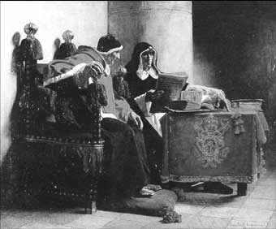

| |
|
|
| |
|
|
| |
Dans
la seconde moitié du 12e siècle, les hérésies prennent une ampleur
inquiétante en Europe. L'Eglise cherche alors des moyens efficaces
pour enrayer ce phénomène.
L'inquisition est née en France des termes du Traité de Paris, signé
au pied des tours de Notre-Dame le 12 avril 1229. Mettant fin à
la 2e croisade menée contre les Albigeois, l'accord certifiait l'engagement,
devant Saint Louis, Roi de France, de Raymond VII de Toulouse à
chasser les cathares de son comté.
Le 13 avril 1233, le Pape Grégoire IX instaure officiellement un
système inquisitorial en France en annonçant qu'il conférait aux
Frères Prêcheurs une autorité illimitée pour combattre l'hérésie
et en nommant F. Robert dit le Bougre inquisiteur général du Royaume.
Ces événements marquent la fin du principe qu'avait énoncé Bernard
de Clairvaux : Fides suadenda non imponenda (la foi doit être persuadée
non imposée) et si l'hérésie ne date pas du 13e siècle, la mise
en place d'une procédure légale est un fait totalement nouveau en
Europe.
|
|
| |
L'inquisition
s'organise sous la forme d'un tribunal exceptionnel
dont la compétence se limite à la défense de la foi.
Outre son activité d'investigation, l'institution revêt
la double fonction de sévir et punir. Elle n'agit cependant
pas seule, le pouvoir civil se chargeant de la répression
armée et de l'exécution des peines.
Créée pour lutter contre les Cathares et les Vaudois,
elle étend ses activités dans tous les domaines qui
seraient en contradiction avec le dogme et qui comprend
aussi bien la sorcellerie que la philosophie ou même
la science lorsqu'elle ne va pas dans le sens de la
vision aristotélicienne du monde. Galilée lui-même devra
renoncer à sa théorie sur l'héliocentrisme devant le
tribunal de l'Inquisition en 1633.
En France, l'inquisition s'installe partout. Dans le
Nord du royaume, l'institution semble agir de façon
peu méthodique et assez désordonnée tandis que les inquisiteurs
investissent en masse la moitié Sud, théâtre des plus
grandes hérésies de la fin du Moyen Age. Ainsi, on distingue
une Inquisition fixe en Languedoc et des tribunaux ambulants,
comptant 5 ou 6 inquisiteurs, pour le reste du Royaume.
|
|
|
| |

|
|
 |
(agrandir)
Le Pape et l'Inquisiteur,
Peinture de Jean-Paul Laurens, 1882, Musée des Beaux-Arts
de Bordeaux.
L'inquisiteur Torquemada (1420 - 1498), avec son index
posé sur la table, dicte ses projets au Pape Sixte IV.
Cette scène illustre le rôle du conseil occulte auprès
du pape
.
|
|
|
| |
|